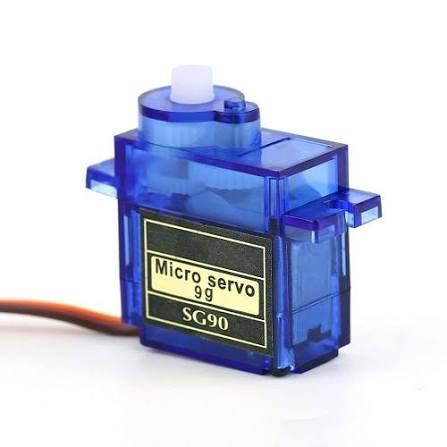

Động cơ servo TowerPro SG90 9g là loại động cơ servo phổ biến, kích thước nhỏ gọn, thích hợp cho các ứng dụng robot cơ bản, mô hình cánh tay robot, máy bay RC cánh bằng.
| Trọng lượng | 9g |
|---|---|
| Góc xoay | 180 độ |
| Tốc độ hoạt động | 0.12s / 60 độ (ở mức nguồn 4.8V) |
| Lực kéo (Stall Torque) | 1.6 kg/cm (ở 4.8V) |
| Điện áp hoạt động | 3.0V - 6.0V DC (Khuyên dùng 5V) |
| Chất liệu bánh răng | Nhựa Nylon chống mài mòn |
Động cơ Servo SG90 9g hoạt động dựa trên cơ chế nhận tín hiệu xung PWM từ vi điều khiển để điều khiển góc quay của trục đầu ra từ 0 đến 180 độ. Bo mạch điều khiển tích hợp bên trong động cơ sẽ tự động so sánh vị trí trục hiện tại (thông qua biến trở phản hồi) và điều chỉnh motor DC quay đến góc mong muốn.
Sản phẩm đi kèm sẵn các loại cánh tay servo nhựa (horns) và ốc vít gá đặt, giúp việc lắp ráp cơ khí trở nên vô cùng nhanh chóng.